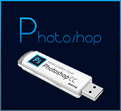

Фоторедактором можно назвать любую программу с возможностью обработки изображения. Встречаются платные и бесплатные версии, рассчитанные как на «новобранца» в графическом дизайне, так и искусного мастера. Обычно для редактирования фото на ПК достаточно скачать Фотошоп но мы вам представим еще несколько редакторов с репутацией хорошего фоторедактора графики на компьютере.
Ни одна современная разработка не обходится без предварительного моделирования. Этот непростой процесс происходит при помощи других специальных программ и напрямую связан с графическими редакторами. С их помощью обрабатывается текстура, которая на них накладывается. Получается, дизайн имеет огромное значение, и ни одна сфера деятельности не может обойтись без обработки графики фоторедактором.
Последние версии редакторов Adobe photoshop:
 |
||
|
|
|
|
|  |  |
|


Редакторы графических изображений используются для обработки растровой графики, то есть обычной фотографии или рисунка. Какую бы сферу деятельности вы не выбрали, скорее всего, она рано или поздно коснется программы для дизайнерской работы, ведь фоторедактор для компьютера можно использовать для создания логотипов фирм, обработки фотографии или рисунка, изменения или редактирования фона, наложения текстур, доработки, искажения, добавления нужного эффекта снимку, изменения яркости и контраста, создания дружеских шаржей и юмористических картинок, объединения нескольких снимков и монтажа, рисования и разработки текстур для моделей, разработки рекламы, буклетов, стендов, вывесок, оформления документов и интернет сайтов.
Список можно продолжать до бесконечности, поскольку функциональность программ ничем неограниченна. Существуют специально разработанные программные комплексы, состоящие из фоторедакторов, ПО для web дизайна, софта и плагинов для редактирования и добавления эффектов.
Другие редакторы графики и фото
|
Для нетрудных задач с картинками и фото |
Многоцелевой графический редактор |
Мощный редактор векторной графики |
| Редактор PAINT NET | GIMP РЕДАКТОР ГРАФИКИ | Сorel draw программа |
В этой категории можно скачать бесплатно фоторедактор и открыть для себя новый мир дизайнерского искусства, получив полный ассортимент инструментов для работы, таких как шаблоны высокого качества, эффекты и возможность обработки, инструменты ретуширования.
Новые алгоритмы работы и специализированные фильтры дадут возможность добавления эффекта нажатием одной кнопки, хотя ранее на это уходили часы. При помощи обработки фоторедактором ваша работа будет выглядеть совершенной, и выполнятся быстро и качественно.
Всё понравилось, проверю как будет в работе!
ochen nujna horoshaya programma dlya redakta
spasibo bol’shoe za pomosh’
Пока все хорошо, пробую работать
ОКЕЙ